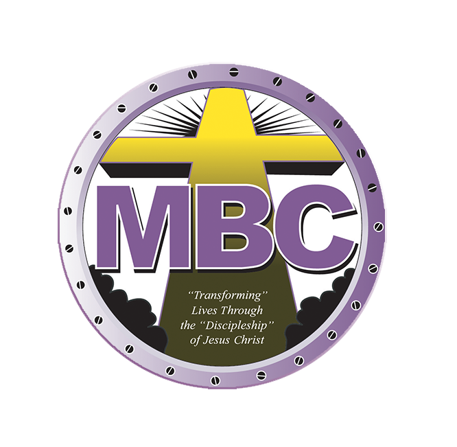

Macedonia Baptist Church is recognized by Arlington County as a historical site. Learn more about it's history below
read moreTake a Journey into the prayer group in Nauck heights that became Macedonia Baptist Church
learn moreSee how the church evolved during the era of Reverend Robinsons' leadership, and how the lord blessed his time.
learn moreHow the lord used Reverend Dr. Hamlin to bless our community and church.
learn moreWhen the world was shut down during the biggest pandemic of the century, see how the lord used Reverend Harcum to lead us through.
learn moreWe look at the blessings the lord has used us to provide to the community, and some of the amazing recognition they have given us as well.
learn moreWe look towards the future for the vision God has given to our leadership.
learn more"Macedonia Baptist Church was the first African-American church established by residents in the Nauck community. Founded in 1911, the church traces its origins to prayer meetings held in 1908 at the home of Bonder and Amanda Johnson at 22nd Street South and South Monroe in Nauck Heights. The group erected a small church building adjacent to the Johnson home, then purchased Peyton Hall at Nauck Station, next door to the present site. Rev. John Gilliam was the first pastor of the official church. Steady growth of the congregation over the years led to construction in 1927 of a new building at that site. In 1971, the cornerstone was laid for the present building." is what is inscribed on the marker outside of the church placed in 2003.
In 2009, Macedonia Baptist Church was honored by the Virginia General Assembly for its work in the community during the church's 100th anniversary.
Macedonia Baptist Church was Founded in 1908 as a prayer group in Mrs. Amanda Johnson's home in Nauck Heights. Macedonia Baptist Church quickly grew into a dedicated congregation under Reverend John Gilliam, who baptized its first members in 1912. Over the decades, the church flourished under several pastors, most notably Reverend Sherman W. Phillips (1925-1968). He oversaw major growth including the 1927 cornerstone laying, Sunday School, choirs, and service clubs. Macedonia nurtured spiritual leadership, sending six sons into ministry and by 1968 had cleared its mortgage and invested over $36,000 in improvements, solidifying its role as a pillar of Christian leadership in Arlington, Virginia.
read moreUnder Reverend Clarence A. Robinson's 26-year leadership beginning in 1969, Macedonia Baptist Church expanded spiritually and structurally. A new sanctuary was built and dedicated in 1973, and the church mortgage was paid off early in 1989. Reverend Robinson emphasized stewardship, launched Calendar clubs, and welcomed guest speakers. Ministries flourished including Bible Study, Youth, Music, and Transportation. Alongside these there were also three scholarships created. Key milestones included the launch of The Macedonian newsletter, the formation of birth-month parishes, and the Clarence A. Robinson Library. Macedonia became known as "The Community Church"
read moreUnder Dr. Leonard Hamlin, Sr.'s 22-year pastorate beginning in 1996, Macedonia Baptist Church experienced dynamic growth in ministry, membership, and community outreach. The church expanded its property holdings, launched the BAJCDC, and opened "The Macedonian" affordable housing complex. Dr. Hamlin licensed 22 ministers, ordained 7, and oversaw the consecration of 26 deaconesses and 22 deacons. Fourty-Four ministries were revitalized, including Evangelism, Youth, and Health. Membership reached 1,300 prompting service restructuring and facility upgrades. In 2018 Dr. Hamlin transitioned to the Washington National Cathedral and Macedonia continued its mission with renewed leadership and community engagement.
read moreIn 2019, Macedonia remained under Deacon Ministry leadership as the congregation sought a new pastor. Reverend Craig A. Harcum was elected Pastor-Elect in November and began his duties in December. That year included Homecoming, the 111th Anniversary, and Discipleship class graduation. Services were led by guess preachers, and former Pastore Leonard L. Hamlin Sr. returned to preach on New Year's Eve. through transition and prayer, Macedonia continues to grow in faith, love, and purpose. In 2020, Macedonia remained steadfast amid the COVID-19 pandemic. After a powerful Spring Revival in March, the church closed its facility on March 16 but continued virtual worship and ministry. Reverend Craig A. Harcum was formally installed as Pastor on July 26 in a virtual ceremony. Key events included virtual Homecoming, the 112th Anniversary, and a drive-by celebration for Pastor Harcum's 50th birthday. Facility upgrades were made, and county permits were extended. The year concluded with the approval of the 2021 budget, marking a season of resilience and faith.
In 2021, Macedonia continued its mission of service and outreach. New leadership was appointed in the Deaconess ministry, and the church hosted its Annual meeting virtually. From March to June, Macedonia Discipleship Commencement was held in June, and in October the NAACP honored Macedonia and Trustee Lamont West for their pandemic response and community impact. In 2022, Macedonia recieved the COVID-19 Heroes Award for its community impact. The church resumed in-person worship in phased stages and held its Annual Meeting virtually. Homecoming was celebrated on September 11, and the 114th Anniversary on November 6. Throughout the year, Macedonia remained devoted to faith, fellowship, and service. 2023 was a year of renewed worship and outreach. Highlights included community prayer and Vacation bible school. We also included special services like Sweatsuit Sunday, Youth Sunday, Homecoming, and the 115th Anniversary, Ministries hosted events such as Women's Health Summit, Pop-up Shop, and Veteran's Seminar, while also recognizing Breast Cancer and Domestic Violence Awareness. On May 23, ministries were restructured under new leadership. Pastor Harcum's 4th Anniversary was celebrated in December as Macedonia continued to grow in faith and service.
In 2024, Macedonia Baptist Church deepened its spiritual foundation and community engagement. Key initiatives included launching Children's Church, reviving the Scholarship aid ministry, and hosting a dynamic Vacation Bible school. Fellowship flourished through events like the church cookout, Ministry Fair, Movie Day, First Lady Table Talk, and voter registration efforts. Pastor Harcum extended Macedonia's global reach with a mission trip to Zimbabwe. Leadership development continued with Minister Jeffrey Haskins licensed (December 2025), and new trainees welcomed; Minister-in-Training Gifford Brown, Deacon-in-Training Eduardo Gadsden, and Deaconess-in-Training Angel Gadsden. Health & Wellness awareness and quarterly leadership training supported holistic growth. The year concluded with the Christmas play "Bow Down".
In 2025, Macedonia Baptist Church experienced meaningful growth in ministry, outreach, and infrastructure. A $65,000 Capital Campaign was launched to support future development and expansion. During February and March, the church celebrated its Living Legends over a five-week period, honoring their enduring contributions. Deacon Quincy Henderson was appointed Vice Chair Emeritus of the Deacon Ministry, while Deaconess Eva Henderson and Deaconess Clara Lamback were named Deaconess Emeritus of the Deaconess Ministry. Additionally, Michelle Johnson was appointed Interim Financial Secretary. Community engagement expanded with events hosted in the church facility including the DHS Agining Conference, a Corporate Prayer and Encouragement service hosted for Government workers involved in the government shutdown, and a Spring Break Camp in partnership with Bridges to Independence. Key ministry milestones included the approval of a new Grants committee, a spirited Spring Revival Service, and the relaunch of The Bells of Joy on Easter Sunday. Plans are underway to renovate and lease the church salon, host Vacation Bible School in the John Robinson Town Square, and plans are underway to launch new Young Adult Ministry progamming. International outreach continued with a mission trip to Africa in August, and the digital presence is being strengthened with the completion of a redesigned website. Macedonia remains committed to building faith, fostering fellowship, and serving with purpose.
Want to be a part of the next chapter?